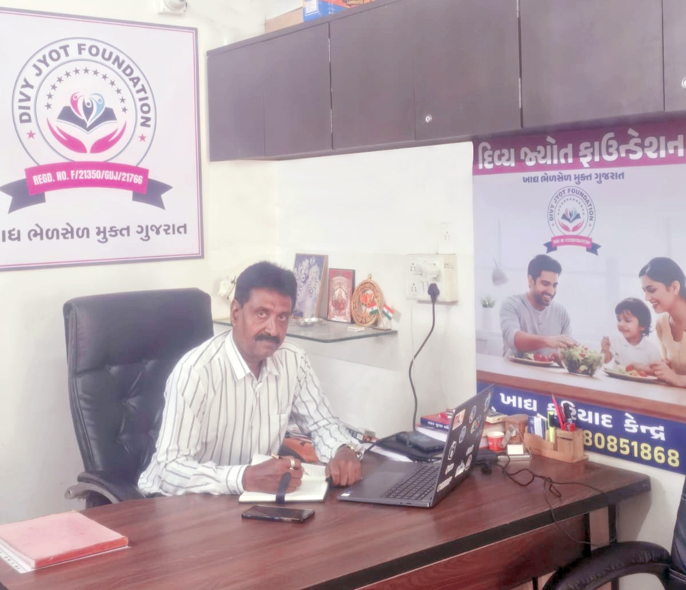

Divy Jyot Foundation is a non-profit organization committed to protecting consumers and promoting food safety awareness throughout Gujarat.
"The Foundation believes that safe food is a basic right and that every citizen deserves protection from adulterated and unsafe food products."
Through education, advocacy, and community engagement, we work to create awareness about food safety and empower consumers to make informed choices.

Protecting public health from adulterated food products.
Practical guides to identify common adulterants.
Collaborating with authorities for regulatory compliance.
Organizing testing campaigns across major cities.
Our priorities guiding the campaign toward food safety and consumer health across Gujarat.
Eradicating toxic food fraud, chemical additives, and dangerous contamination across Gujarat.
Providing citizens with practical kits and resources to identify adulterated food at home.
Collaborating with local food safety inspectors and aiding in swift enforcement of standards.
Educating street vendors, restaurants, and compliance staff on proper hygiene regulations.
Combating long-term diseases caused by carcinogenic adulterated food items.
Inspiring food producers to perform testing, maintain trust, and adhere to clean ethics.
Your support fuels testing kits, public awareness camps, and fast guidance for filing food safety complaints.
Support Our WorkDivy Jyot Foundation is actively educating communities and testing food safety across Gujarat. Hover over any region circle below to see outreach members and campaigns.
Join our growing network of citizens, volunteers and supporters working toward a healthier and Adulteration-free Gujarat. Together we can protect future generations.